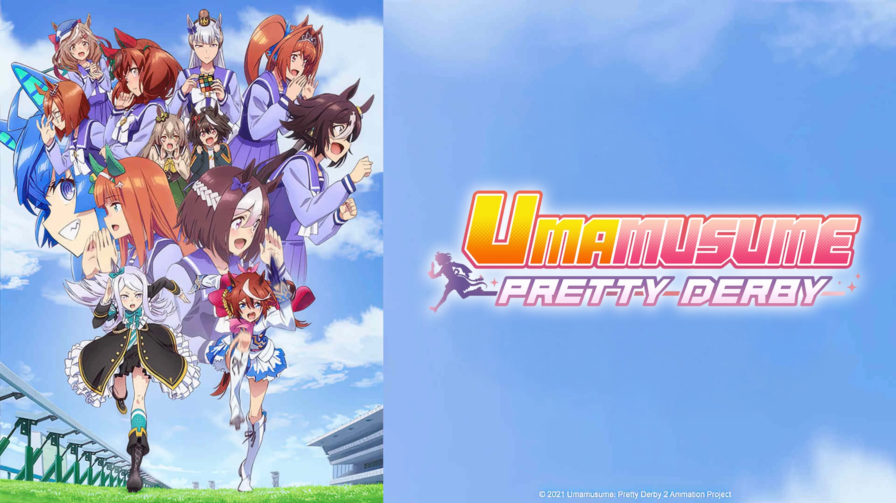

Un fanático de Uma Musume Pretty Derby compra un caballo real y debuta con mala fortuna
La franquicia nos trae una prueba de que la obsesión por las chicas caballo puede costar miles de dólares.
Llevar el fanatismo por un videojuego de dispositivos móviles al mundo real suele quedarse en comprar figuras, sábanas o gastar miles de dólares en el sistema gacha. Sin embargo, un jugador de Uma Musume Pretty Derby decidió romper por completo cualquier límite establecido al llevar su obsesión por las chicas caballo a la vida real, adquiriendo un caballo pura sangre auténtico para meterse de lleno en el competitivo y costoso negocio de las carreras hípicas.
Inspirado fuertemente por el título de Cygames que rinde homenaje a equinos históricos de la vida real, este fanático logró mover sus contactos hastaconvertirse en el propietario legítimo de una potranca bautizada como Jax Belle. Tras meses de preparación teórica y un duro entrenamiento, el animal fueinscrito para hacer su debut oficial en las pistas el pasado 25 de julio de 2025, en el hipódromo de Uttoxeter ubicado en el Reino Unido

Por desgracia, la realidad resultó ser mucho más dura y caprichosa que los algoritmos del juego. Mientras esperaba pacientemente en el paddock antes de iniciar la competición, Jax Belle recibió una patada inesperada por parte de otro caballo, sufriendo una lesión en una de sus patas. A pesar del evidente dolor y el contratiempo físico, la yegua inició la carrera con bastante fuerza, logrando posicionarse entre el cuarto y el sexto lugar durante los primeros metros del recorrido.
La adrenalina no bastó para ocultar el daño físico. El jinete a cargo de la monta notó rápidamente que el trote de Jax Belle se volvía errático y extraño, por lo que decidió disminuir la velocidad progresivamente para evitar una fractura grave o un daño permanente. Aunque la potranca logró cruzar la línea de meta para cumplir el protocolo, terminó rezagada en la última posición del tablero. Tras la accidentada carrera, el equipo veterinario y el dueño determinaron otorgarle varias semanas de descanso obligatorio para garantizar su total recuperación.
Los verdaderos costos de mantener una Uma Musume real
Esta curiosa situación ha encendido el debate sobre los riesgos financieros y las inmensas responsabilidades que conlleva el cuidado de estos animales. El propietario reveló que los gastos anuales de manutención de Jax Belle, que incluyen el pago de entrenadores profesionales, alimentación especializada, establo y constantes revisiones veterinarias, ascienden a casi 7,000 dólares al año, una cifra considerable que demuestra que la hípica no es un pasatiempo para cualquiera.
Si bien el videojuego ha provocado que miles de jóvenes en todo el mundo comiencen a interesarse y a sintonizar las transmisiones de carreras de caballos reales, son contados los casos de personas que dan el salto definitivo de comprar un ejemplar de carne y hueso. A pesar del amargo trago que significó quedar en el último lugar debido al accidente en los establos, el dueño se mantiene completamente optimista sobre el rendimiento y el futuro de Jax Belle en los circuitos profesionales una vez que sane por completo.
Gastar en el juego digital para obtener a tu waifu favorita ya parecía un exceso para muchos, pero mantener un caballo real es otro nivel de compromiso. ¿Piensas que este tipo de inversiones demuestran un amor genuino por los animales impulsado por el anime, o consideras que los fanáticos a veces pierden la noción de la realidad al intentar replicar los simuladores en la vida real?